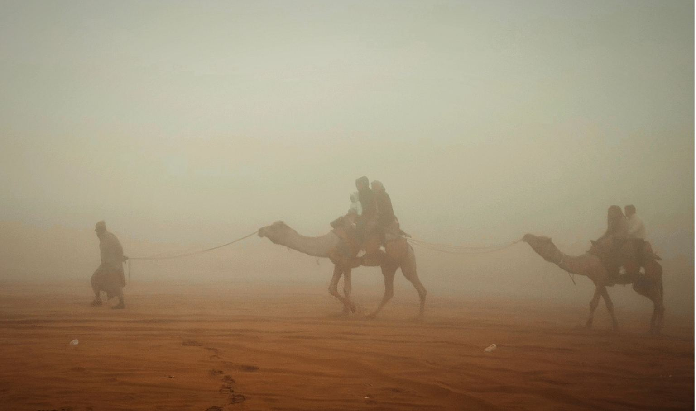
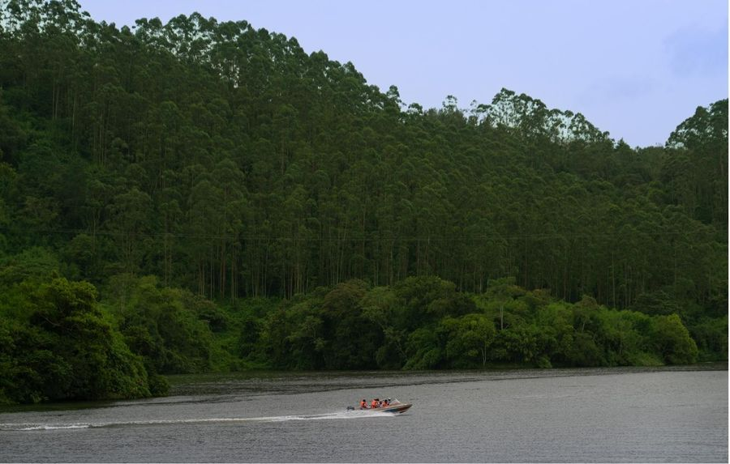

Ronald Jefferson Photography
Scroll
I photograph what only shows itself to someone willing to stand still.
Ten years, eight disciplines, one instinct.
Ronald works between the Western Ghats and the Arabian Sea, and travels for the rest. Landscapes taught him to wait. Wildlife taught him to wait longer. Everything since — buildings, faces, food, objects — has been the same patience pointed somewhere new.
Every frame below was made on assignment or on foot. Nothing here is stock.
The disciplines
Drag, scroll or use ← → · Open the centre frame

The last frame
Let’s make something worth standing still for.
Emailronaldjefferson007@gmail.com→
Instagram@ronaldjefferson→
Start a commission
Based inGoa, India — available worldwide